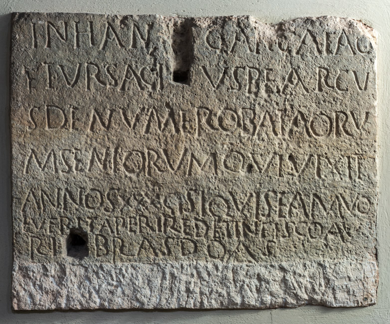

The Inscription of Ursacius
PHYSICAL DESCRIPTION
- Type
- Lateral panel of the sarcophagus.
- Material(s)
- Limestone.
- Execution
- Inscribed.
- Dimensions
- 58 × 73 cm
- Epigraphic Field
- 58 × 73 cm
- Letters Height
- 4-6.5 cm
Palaeographic comment
Dextrorse direction, horizontal alignment, vertical module, irregular ductus, left-aligned layout.
A with a broken crossbar.
E, F, and T strongly compressed laterally.

INSCRIPTION
INTERPRETATIVE TRANSCRIPTION
In ha{n}c arca iac
=
et Ursacius, bearcu
=
s (!) de numeroBataoru
=
m (!) seniorum, qui vixit
annos XXX. Si {si} quis eam vo
quis eam volu
=
erit aperire, det in fisco au
=
ri libras d⸢u⸣as.
APPARATUS CRITICUS
5. SI QVIS, Lettich 1983
.
TRANSLATION
In this arca lies Ursacius, biarchus of the numero of the Batavi seniores, who lived for thirty years.
If anyone should wish to open it, he shall pay two (Roman) pounds of gold to the fiscus.
PEOPLE
Ursacius
- COGNOMEN
- Ursacius
- ORIGIN (of the name Ursacius)
- latin
- GENDER
- male
- OCCUPATION
- soldier
- RANK
- biarchus
- NUMERUS
- Batavi Seniores
- ROLE
- deceased
Bibliography
| Bertolini 1875b, 117-118, n. 11. |
| Bertolini 1876a, 87, n. 4. |
| CIL V 8776 |
| ILS 2799 |
| ILCV 516 |
| Hoffmann 1963, 41, n. 19. |
| Lettich 1983, 82-83, n. 39. |
- EDR
-
EDR097924
- Author of the record:
- Damiana Baldassarra
- Date:
- 30-11-2007
COMMENTARY
Ursacius was a biarchus of the Batavi seniores. The biarchus represented one of the lower-ranking positions among the subaltern grades, and its specific function remains a subject of scholarly debate. According to Grosse, the biarchus would have been a non-commissioned officer in charge of provisioning, corresponding to the ancient frumentarius; this hypothesis was perhaps suggested by a presumed Greek etymology based on βίος + ἀρχός or βία + ἀρχός (Grosse 1920, 114-115). Speidel, however, maintains that the term derived from the evolution of the rank of exarchus, attested in the 3rd century AD; the rank could be conferred twice as a reward, obtaining the title of bis exarchus, which was subsequently contracted into biarchus during the 4th century (Speidel 2005, 206).
According to some hypotheses, the numerus of the Batavi, similarly to other auxilia, was founded prior to the tetrarchy by men belonging to the Germanic tribe of the same name (Rocco 2012, 163). However, the epigraphs found at Concordia attest to members with cognomina of Latin origin, as in the case of Ursacius himself, or Celtic origin, demonstrating that by this period the unit was no longer ethnically homogeneous.
The burial of Ursacius is located in the immediate vicinity of the sarcophagi of two other members of the Batavi: Flavius Carpilio and Flavius Savinus. This spatial proximity, together with that of Flavius Victurinus and Flavius Launio slightly further east, seems to confirm the existence of a strong spirit of camaraderie within the contingent.
The monetary fine of two Roman pounds of gold appears to be common among the Batavi of subaltern rank, appearing identically in the epigraphs of Savinus and Launio.
The inscription of Ursacius is engraved on the side panel of the sarcophagus, bucking the trend of most epigraphs in the necropolis, which were typically carved on the front. Given the site plan of the area, with other chests placed against the long sides, it is likely that the choice of the northern short side was dictated by the need for visibility toward the path that divided the burial ground into two sections.
A further peculiar aspect is the relationship between the text and the metal cramp used for sealing, which occupied part of the epigraphic field (Bertolini 1876a). The distribution of the letters, calibrated to avoid the recess for the cramp, suggests that the inscription was only executed after the definitive closure of the sarcophagus, once the body had already been interred.